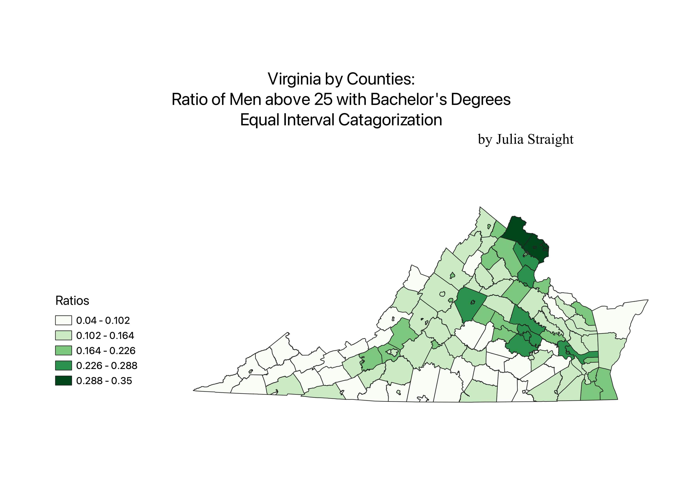
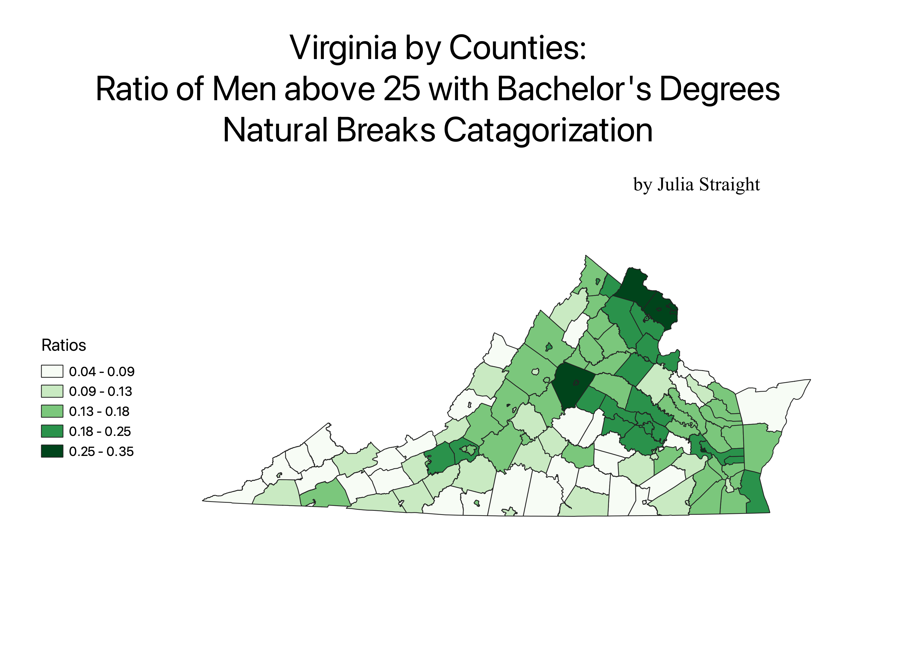
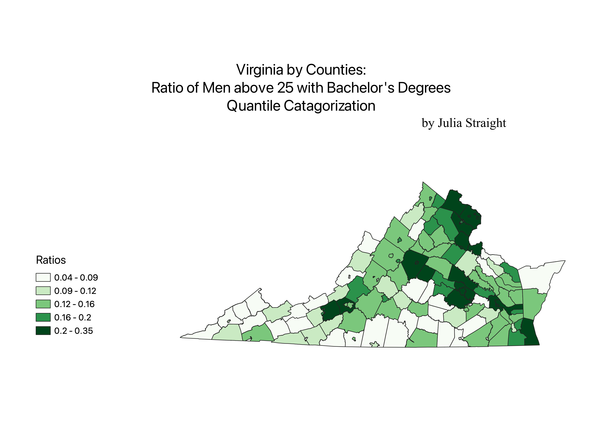

Homework 6: Census data ratio choropleth
Julia Straight
These maps depict the ratio of men above 25 in Virginia who have completed a Bachelor's degree by county. I created a ratio of men in that county who had completed a bachelor's to the total number of men in that county. I created that ratio so that we could see how common bachelor's degrees are by county, and be able to account for some counties being less populated than other counties. The pure number of men with bachelor's degrees by county may have made it look like men are more educated in counties with higher populations. With this ratio, we can directly compare counties with higher populations to counties with lower populations.

With the Equal Interval Catagorization, the ratio legend is harder to read because the ratio values are more specific decimals. However, this catagorization really emphasizes the large number of bachelor's degrees in Northern Virginia.

With the Natual Breaks Catagorization, the ratio legend is easier to read because every decimal only goes out to two points. There's also much more color on this map. However, it is a little strange to see that one color only represents a span of .03 and another represents a span of .1, which is a much larger expanse of ratios.

Quantile Catagorization is the easiest for me to read. The variety of colors looks more visually even than the other catagorization. However, the problem with uneven groupings is even more pronounced than in the Natural Breaks Catagorzation: one grouping spans 5 times more than another grouping does.